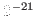
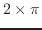
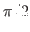
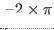

most-positive-fixnum [constant]
-
- #x1fffffff=536,870,911
most-negative-fixnum [constant]
-
- -#x20000000= -536,870,912
short-float-epsilon [constant]
-
-
A floating point number on machines with IEEE floating-point format is
represented by 21 bit mantissa with 1 bit sign and 7 bit exponent with
1 bit sign.
Therefore, floating point epsilon is
 .
.
single-float-epsilon [constant]
-
- same as short-float-epsilon, .
long-float-epsilon [constant]
-
- same as short-float-epsilon since
there is no double or long float. .
pi [constant]
-
- , actually 3.14159203, not 3.14159265.
2pi [constant]
-
-

pi/2 [constant]
-
- 
-pi [constant]
-
- -3.14159203
-2pi [constant]
-
- 
-pi/2 [constant]
-
-
2016-03-23